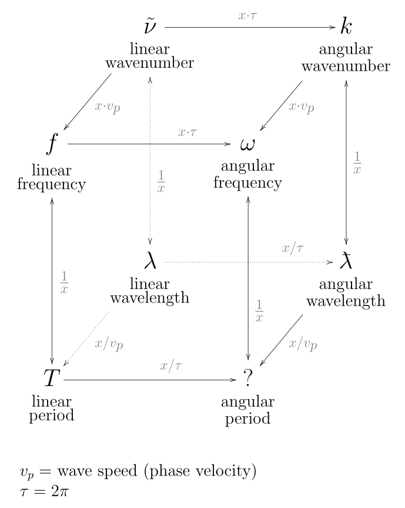
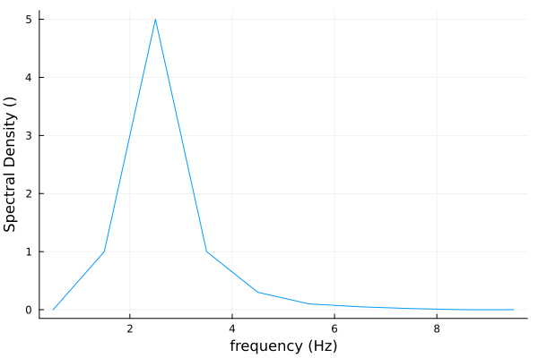
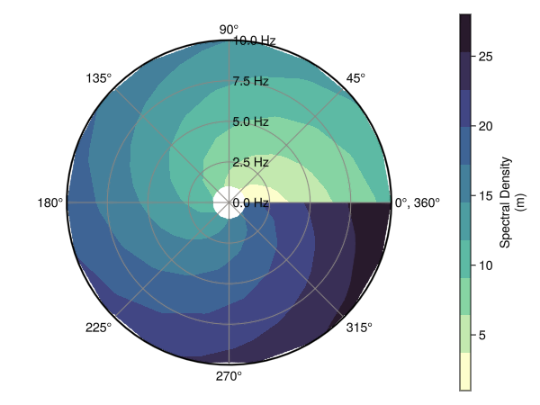

Basic Functionality
This package leverages AxisArrays.jl for the structure of the data and both Unitful.jl and DimensionfulAngles.jl to ensure the units of the data are respected in operations and conversions. The accepted spectral-variable types are temporal/spatial, frequency/period, and linear/angular combinations. Represented as a diagram below.

Directional Spectra
Spectrum objects are directional wave spectra that can be initialized using an AxisArray matrix with exactly two axes. The axes must both be spectral variables for a cartesian spectrum or only one should be a direction for a polar spectrum. Alternatively you can pass both axes as vectors directly into the constructor. Below is an example for creating a spectra with and without AxisArrays.
julia> using WaveSpectra, DimensionfulAngles
julia> f = (6:6:18) * Hz
(6:6:18) Hz
julia> Θ = (120:120:360) * °
(120:120:360)°
julia> S = Spectrum(ones(Float64, (3, 3)) * m^2/Hz/°, f, Θ)
3×3 Spectrum{m² °⁻¹ Hz⁻¹}{Hz}{°}
Spectral density of the quantity (m²) with polar coordinates:
• Axis 1: Frequency (Hz)
• Axis 2: Direction (°)
and data(m² °⁻¹ Hz⁻¹):
1.0 1.0 1.0
1.0 1.0 1.0
1.0 1.0 1.0
julia> A = AxisArray(ones(Float64, (3,3)) * m^2/Hz/°, f, Θ)
2-dimensional AxisArray{Unitful.Quantity{Float64, 𝐋² 𝐓 𝐀⁻¹, Unitful.FreeUnits{(°⁻¹, Hz⁻¹, m²), 𝐋² 𝐓 𝐀⁻¹, nothing}},2,...} with axes:
:row, (6:6:18) Hz
:col, (120:120:360)°
And data, a 3×3 Matrix{Unitful.Quantity{Float64, 𝐋² 𝐓 𝐀⁻¹, Unitful.FreeUnits{(°⁻¹, Hz⁻¹, m²), 𝐋² 𝐓 𝐀⁻¹, nothing}}}:
1.0 m² °⁻¹ Hz⁻¹ 1.0 m² °⁻¹ Hz⁻¹ 1.0 m² °⁻¹ Hz⁻¹
1.0 m² °⁻¹ Hz⁻¹ 1.0 m² °⁻¹ Hz⁻¹ 1.0 m² °⁻¹ Hz⁻¹
1.0 m² °⁻¹ Hz⁻¹ 1.0 m² °⁻¹ Hz⁻¹ 1.0 m² °⁻¹ Hz⁻¹
julia> S = Spectrum(A)
3×3 Spectrum{m² °⁻¹ Hz⁻¹}{Hz}{°}
Spectral density of the quantity (m²) with polar coordinates:
• Axis 1: Frequency (Hz)
• Axis 2: Direction (°)
and data(m² °⁻¹ Hz⁻¹):
1.0 1.0 1.0
1.0 1.0 1.0
1.0 1.0 1.0You can also use a package like BuoyData.jl that downloads data from the National Data Buoy Center and converts them into Spectrum objects.
julia> buoy = 46050; year = 2025;
julia> available_pacwave = NDBC.available(buoy, :spectrum; retries = 1)
18×2 DataFrame
Row │ year b_file
│ Int64 Bool
─────┼───────────────
1 │ 2008 false
2 │ 2009 false
3 │ 2010 false
...
16 │ 2023 false
17 │ 2024 false
18 │ 2025 false
julia> bfile = available_pacwave[available_pacwave.year .== year, :].b_file == 1
false
julia> data_historical = NDBC.request(buoy, year, bfile)
1-dimensional AxisArray{Spectrum,1,...} with axes:
:time, Axis{:time, Vector{Dates.DateTime}}([Dates.DateTime("2025-01-01T00:10:00"), Dates.DateTime("2025-01-01T00:40:00"), Dates.DateTime("2025-01-01T01:10:00"), Dates.DateTime("2025-01-01T01:40:00"), Dates.DateTime("2025-01-01T02:10:00"), Dates.DateTime("2025-01-01T02:40:00"), Dates.DateTime("2025-01-01T03:10:00"), Dates.DateTime("2025-01-01T03:40:00"), Dates.DateTime("2025-01-01T04:10:00"), Dates.DateTime("2025-01-01T04:40:00") … Dates.DateTime("2025-12-31T19:10:00"), Dates.DateTime("2025-12-31T19:40:00"), Dates.DateTime("2025-12-31T20:10:00"), Dates.DateTime("2025-12-31T20:40:00"), Dates.DateTime("2025-12-31T21:10:00"), Dates.DateTime("2025-12-31T21:40:00"), Dates.DateTime("2025-12-31T22:10:00"), Dates.DateTime("2025-12-31T22:40:00"), Dates.DateTime("2025-12-31T23:10:00"), Dates.DateTime("2025-12-31T23:40:00")])
And data, a 10696-element Vector{Spectrum}:
47×360-Spectrum{m² Hz⁻¹}{Hz}{°}
47×360-Spectrum{m² Hz⁻¹}{Hz}{°}
⋮
47×360-Spectrum{m² Hz⁻¹}{Hz}{°}
47×360-Spectrum{m² Hz⁻¹}{Hz}{°}
47×360-Spectrum{m² Hz⁻¹}{Hz}{°}Please refer to the full syntax for each function here.
Omnidirectional Spectra
Similar to it's directional counterpart, the OmnidirectionalSpectrum constructor can take an AxisArray object that only has a single axes with any of the compatible units. Alternatively, you can pass the vectors directly into the constructor or use another package that downloads the data. An example showing the initialization with and without an AxisArray matrix.
julia> using WaveSpectra, AxisArrays, DimensionfulAngles
julia> Sf = (1.0:4.0) .* m^2/Hz
4-element Vector{Unitful.Quantity{Float64, 𝐋² 𝐓, Unitful.FreeUnits{(Hz⁻¹, m²), 𝐋² 𝐓, nothing}}}:
1.0 m² Hz⁻¹
2.0 m² Hz⁻¹
3.0 m² Hz⁻¹
4.0 m² Hz⁻¹
julia> f = (1.0:4.0) .* Hz
(1.0:1.0:4.0) Hz
julia> S = OmnidirectionalSpectrum(Sf, f)
4-element OmnidirectionalSpectrum{m² Hz⁻¹}{Hz}
Spectral density of the quantity (m²):
• Axis: Frequency (Hz)
and data(m² Hz⁻¹):
1.0
2.0
3.0
4.0
julia> A = AxisArray(Sf, f)
1-dimensional AxisArray{Unitful.Quantity{Float64, 𝐋² 𝐓, Unitful.FreeUnits{(Hz⁻¹, m²), 𝐋² 𝐓, nothing}},1,...} with axes:
:row, (1.0:1.0:4.0) Hz
And data, a 4-element Vector{Unitful.Quantity{Float64, 𝐋² 𝐓, Unitful.FreeUnits{(Hz⁻¹, m²), 𝐋² 𝐓, nothing}}}:
1.0 m² Hz⁻¹
2.0 m² Hz⁻¹
3.0 m² Hz⁻¹
4.0 m² Hz⁻¹
julia> S = OmnidirectionalSpectrum(A)
4-element OmnidirectionalSpectrum{m² Hz⁻¹}{Hz}
Spectral density of the quantity (m²):
• Axis: Frequency (Hz)
and data(m² Hz⁻¹):
1.0
2.0
3.0
4.0Please refer to the full syntax for each function here.
Other Spectra Functions
Transforming Spectra
This package supports the transformation between directional and omnidirectional spectra. Going from directional to omnidirectional you can call the spread_function function and pass the directional Spectrum into the OmnidirectionalSpectrum constructor or call the split_spectrum helper functions which uses both and returns a tuple.
julia> f = (1.0:4.0) .* Hz
(1.0:4.0) Hz
julia> Θ = (1.0:4.0) .* °
(1.0:4.0) °
julia> S = Spectrum([x + y for x in 0:3, y in 1:4] .* m^2, f, Θ)
4×4 Spectrum{m²}{Hz}{°}
Spectral density of the quantity (° Hz m²) with polar coordinates:
• Axis 1: Frequency (Hz)
• Axis 2: Direction (°)
and data(m²):
1 2 3 4
2 3 4 5
3 4 5 6
4 5 6 7
julia> S_omni = OmnidirectionalSpectrum(S)
4-element OmnidirectionalSpectrum{° m²}{Hz}
Spectral density of the quantity (° Hz m²):
• Axis: Frequency (Hz)
and data(° m²):
7.5
10.5
13.5
16.5
julia> S_spread = spread_function(S)
4×4 Spectrum{°⁻¹}{Hz}{°}
Spectral density of the quantity (Hz) with polar coordinates:
• Axis 1: Frequency (Hz)
• Axis 2: Direction (°)
and data(°⁻¹):
0.13333333333333333 0.26666666666666666 0.4 0.5333333333333333
0.19047619047619047 0.2857142857142857 0.38095238095238093 0.47619047619047616
0.2222222222222222 0.2962962962962963 0.37037037037037035 0.4444444444444444
0.24242424242424243 0.30303030303030304 0.36363636363636365 0.42424242424242425
julia> S_omni, S_spread = split_spectrum(S)
(4×1-OmnidirectionalSpectrum{° m²}{Hz}, 4×4-Spectrum{°⁻¹}{Hz}{°})
julia> isspread(S_spread)
trueThis package also allows the conversion of directional spectra from polar to cartesian coordinates and vice versa.
julia> f = (1.0:4.0) .* Hz
(1.0:4.0) Hz
julia> Θ = (1.0:4.0) .* °
(1.0:4.0) °
julia> S = Spectrum([x + y for x in 0:3, y in 1:4] .* m^2, f, Θ)
4×4 Spectrum{m²}{Hz}{°}
Spectral density of the quantity (° Hz m²) with polar coordinates:
• Axis 1: Frequency (Hz)
• Axis 2: Direction (°)
and data(m²):
1 2 3 4
2 3 4 5
3 4 5 6
4 5 6 7
julia> polar_to_cartesian(S)
2-dimensional AxisArray{Any,2,...} with axes:
:point, 1:16
:component, [:frequency_x, :frequency_y, :spectrum]
And data, a 16×3 Matrix{Any}:
0.999848 Hz 0.0174524 Hz 1.0 m² rad Hz⁻¹
1.9997 Hz 0.0349048 Hz 1.0 m² rad Hz⁻¹
2.99954 Hz 0.0523572 Hz 1.0 m² rad Hz⁻¹
3.99939 Hz 0.0698096 Hz 1.0 m² rad Hz⁻¹
⋮
0.997564 Hz 0.0697565 Hz 4.0 m² rad Hz⁻¹
1.99513 Hz 0.139513 Hz 2.5 m² rad Hz⁻¹
2.99269 Hz 0.209269 Hz 2.0 m² rad Hz⁻¹
3.99026 Hz 0.279026 Hz 1.75 m² rad Hz⁻¹
julia> x1 = (1.0:4.0) .* m
(1.0:4.0) m
julia> x2 = (1.0:4.0) .* m
(1.0:4.0) m
julia> S_cartesian = Spectrum([x + y for x in 0:3, y in 1:4] .* m^3, x1, x2)
4×4 Spectrum{m³}{m}{m}
Spectral density of the quantity (m⁵) with cartesian coordinates:
• Axis 1: Wavelength (m)
• Axis 2: Wavelength (m)
and data(m³):
1 2 3 4
2 3 4 5
3 4 5 6
4 5 6 7
julia> cartesian_to_polar(S_cartesian)
2-dimensional AxisArray{Any,2,...} with axes:
:point, 1:16
:component, [:wavelength, :direction, :spectrum]
And data, a 16×3 Matrix{Any}:
1.41421 m 45.0° 1.41421 m⁴ rad⁻¹
2.23607 m 26.5651° 4.47214 m⁴ rad⁻¹
3.16228 m 18.4349° 9.48683 m⁴ rad⁻¹
4.12311 m 14.0362° 16.4924 m⁴ rad⁻¹
⋮
4.12311 m 75.9638° 16.4924 m⁴ rad⁻¹
4.47214 m 63.4349° 22.3607 m⁴ rad⁻¹
5.0 m 53.1301° 30.0 m⁴ rad⁻¹
5.65685 m 45.0° 39.598 m⁴ rad⁻¹
Please refer to the full syntax for each function here.
Integrating Spectra
In order to enable some of the extended functionality, we needed to define integration rules for the Spectrum and OmnidirectionalSpectrum objects. Due to restrictions from the default implementation of the integrate function from Integrals.jl, all spectra must be evenly spaced before calling the integrate functions. The rectangular rule for integration was also implemented as an alternative integration rule.
julia> x_err = [1.0, 2.5, 3.1, 4.2, 5.22]*Hz
5-element Vector{Quantity{Float64, 𝐓⁻¹, Unitful.FreeUnits{(Hz,), 𝐓⁻¹, nothing}}}:
1.0 Hz
2.5 Hz
3.1 Hz
4.2 Hz
5.22 Hz
julia> S = OmnidirectionalSpectrum((1.0:5.0).*m^2/Hz, x_err)
5-element OmnidirectionalSpectrum{m² Hz⁻¹}{Hz}
Spectral density of the quantity (m²):
• Axis: Frequency (Hz)
and data(m² Hz⁻¹):
1.0
2.0
3.0
4.0
5.0
julia> evenspacing(S)
ERROR: ArgumentError: Vector `x` must be evenly spaced.
julia> S = OmnidirectionalSpectrum((1.0:5.0)*m^2/Hz, (1.0:5.0)*Hz)
5-element OmnidirectionalSpectrum{m² Hz⁻¹}{Hz}
Spectral density of the quantity (m²):
• Axis: Frequency (Hz)
and data(m² Hz⁻¹):
1.0
2.0
3.0
4.0
5.0
julia> integrate(S)
12.0 m²
julia> integrate(S, method=RectangularRule())
15.0 m²Please refer to the full syntax for each function here.
Plotting Spectra
The Plots.jl recipe for plotting omnidirectional spectra is functional, and there is a helper function for plotting a polar spectra using Makie.
julia> f = (0.5:1:9.5) * Hz
(0.5:1.0:9.5) Hz
julia> Sf = [0, 1, 5, 1, 0.3, 0.1, 0.05, 0.02, 0.001, 0]
10-element Vector{Float64}:
0.0
1.0
5.0
1.0
0.3
0.1
0.05
0.02
0.001
0.0
julia> S = OmnidirectionalSpectrum(Sf, f)
10-element OmnidirectionalSpectrum{1}{Hz}
Spectral density of the quantity (Hz):
• Axis: Frequency (Hz)
and data(1):
0.0
1.0
5.0
1.0
0.3
0.1
0.05
0.02
0.001
0.0
julia> plot(S)
julia> f = (1.0:10.0) * Hz
(1.0:10.0) Hz
julia> Θ = (0.0:20:360) * °
Θ = (0.0:20:360) °
julia> S = Spectrum([x + y for x in 0:9, y in 1:19], f, Θ)
10×19 Spectrum{1}{Hz}{°}
Spectral density of the quantity (° Hz) with polar coordinates:
• Axis 1: Frequency (Hz)
• Axis 2: Direction (°)
and data(1):
1 2 3 4 5 6 7 8 9 10 11 12 13 14 15 16 17 18 19
2 3 4 5 6 7 8 9 10 11 12 13 14 15 16 17 18 19 20
3 4 5 6 7 8 9 10 11 12 13 14 15 16 17 18 19 20 21
4 5 6 7 8 9 10 11 12 13 14 15 16 17 18 19 20 21 22
5 6 7 8 9 10 11 12 13 14 15 16 17 18 19 20 21 22 23
6 7 8 9 10 11 12 13 14 15 16 17 18 19 20 21 22 23 24
7 8 9 10 11 12 13 14 15 16 17 18 19 20 21 22 23 24 25
8 9 10 11 12 13 14 15 16 17 18 19 20 21 22 23 24 25 26
9 10 11 12 13 14 15 16 17 18 19 20 21 22 23 24 25 26 27
10 11 12 13 14 15 16 17 18 19 20 21 22 23 24 25 26 27 28
julia> plot_spectrum(S)
Please refer to the full syntax for each function here.
Utilities
With both spectra, there are a few functionalities that were extended from their respective libraries.
julia> f = (6:6:18) * Hz
(6:6:18) Hz
julia> Θ = (120:120:360) * °
(120:120:360)°
julia> S_dir = Spectrum(ones(Float64, (3, 3)) * m^2/Hz/°, f, Θ)
3×3 Spectrum{m² °⁻¹ Hz⁻¹}{Hz}{°}
Spectral density of the quantity (m²) with polar coordinates:
• Axis 1: Frequency (Hz)
• Axis 2: Direction (°)
and data(m² °⁻¹ Hz⁻¹):
1.0 1.0 1.0
1.0 1.0 1.0
1.0 1.0 1.0
julia> axesinfo(S_dir)
(((:temporal, :linear, :frequency), 𝐓⁻¹), ((:direction,), 𝐀))
julia> unit(S_dir)
m² °⁻¹ Hz⁻¹
julia> uconvert(Unitful.cm^2, S_dir)
3×3 Spectrum{cm² °⁻¹ Hz⁻¹}{Hz}{°}
Spectral density of the quantity (cm²) with polar coordinates:
• Axis 1: Frequency (Hz)
• Axis 2: Direction (°)
and data(cm² °⁻¹ Hz⁻¹):
10000.0 10000.0 10000.0
10000.0 10000.0 10000.0
10000.0 10000.0 10000.0Please refer to the full syntax for each function here.
Syntax
- Directional Spectra
- Omnidirectional Spectra
- Other Spectra Functions
Directional Spectra
WaveSpectra.Spectrum — Method
Spectrum(x::AxisArray)Construct a Spectrum from an AxisArray.
The input must have exactly two axes.
WaveSpectra.Spectrum — Method
Spectrum(omni::AbstractOmnidirectionalSpectrum, spread::AbstractSpectrum)Reconstruct a directional Spectrum by combining an omnidirectional spectrum with a directional spread function.
spread must use polar coordinates and its first axis must match omni.axis.
WaveSpectra.Spectrum — Type
Spectrum(
data::AbstractMatrix,
axis1::AbstractVector{<:Quantity},
axis2::AbstractVector{<:Quantity}
)Directional wave spectrum with physical-unit axes and data.
The data matrix must have size (length(axis1), length(axis2)). One axis must be a spectral variable and the other must be either a second spectral variable (cartesian spectrum) or direction (polar spectrum). There are 8 supported spectral-variable types: temporal/spatial, frequency/period, and linear/angular combinations. For polar spectra, the spectral-variable axis must be positive. The coordinate system is inferred from axis types and is either :cartesian or :polar.
Omnidirectional Spectra
WaveSpectra.OmnidirectionalSpectrum — Method
OmnidirectionalSpectrum(x::AxisArray)Convert from an AxisArray to an OmnidirectionalSpectrum.
The input must have exactly one axis.
WaveSpectra.OmnidirectionalSpectrum — Method
OmnidirectionalSpectrum(x::AbstractSpectrum)Calculate the omnidirectional spectrum of a given polar Spectrum by integrating over its directional axis.
WaveSpectra.OmnidirectionalSpectrum — Type
OmnidirectionalSpectrum(
data::AbstractVector,
axis::AbstractVector{<:Quantity}
)One-dimensional omnidirectional wave spectrum with a physical-unit axis.
The inputs data and axis must have equal length. The axis must be one of the 8 supported spectral-variable types and must be positive.
Transforming Spectra
WaveSpectra.spread_function — Function
spread_function(x::AbstractSpectrum)Directional spread function corresponding to the polar spectrum x.
WaveSpectra.split_spectrum — Function
split_spectrum(x::AbstractSpectrum)Split a polar spectrum into an omnidirectional spectrum and a directional spread function.
WaveSpectra.isspread — Function
isspread(x::AbstractSpectrum)Check whether a Spectrum is a spread function.
It must be in polar form and integrate to 1 (dimensionless) over the direction axis at every spectral-variable sample.
WaveSpectra.polar_to_cartesian — Function
polar_to_cartesian(x::AbstractSpectrum)Convert a polar spectrum to cartesian point coordinates.
The result is returned as a 3-column AxisArray with one row per sample point: (axis_x, axis_y, spectrum).
WaveSpectra.cartesian_to_polar — Function
cartesian_to_polar(x::AbstractSpectrum; angle_unit::Units = °)Convert a cartesian spectrum to polar point coordinates.
Both spectrum axes must have the same spectral-variable type. The result is returned as a 3-column AxisArray with one row per sample point: (axis, direction, spectrum).
Integrating Spectra
WaveSpectra.evenspacing — Function
evenspacing(x::AbstractVector)
evenspacing(x::AbstractSpectrum)
evenspacing(x::AbstractOmnidirectionalSpectrum)Return evenly spaced axis parameters as tuples (start, step, length).
For a Spectrum two such tuples are returned, one for each axis. Throws ArgumentError if the axis or axes are not evenly spaced.
WaveSpectra.isevenlyspaced — Function
isevenlyspaced(x::AbstractVector)
isevenlyspaced(x::AbstractOmnidirectionalSpectrum)
isevenlyspaced(x::AbstractSpectrum)Return true when axis values are evenly spaced.
For Spectrum both axes are checked.
WaveSpectra.integrate — Function
integrate(
x::AbstractSpectrum;
include_zero::Bool = false,
method::AbstractSampledIntegralAlgorithm = TrapezoidalRule()
)
integrate(
x::AbstractSpectrum,
ax::Symbol;
include_zero::Bool = false,
method::AbstractSampledIntegralAlgorithm = TrapezoidalRule()
)
integrate(
x::AbstractSpectrum,
ax::Symbol,
axrange::Tuple;
include_zero::Bool = false,
method::AbstractSampledIntegralAlgorithm=TrapezoidalRule()
)
integrate(
x::AbstractSpectrum,
axrange1::Tuple,
axrange2::Tuple;
method::AbstractSampledIntegralAlgorithm=TrapezoidalRule()
)Integrate a 2D [Spectrum] along one axis.
The axis of integration ax can be :axis1, :axis2, or the corresponding entry in x.axesnames. For polar spectra, integrating over direction returns an OmnidirectionalSpectrum, while integrating over the spectral-variable axis returns an AxisArray indexed by direction. For cartesian spectra, integrating over a single axis returns an AxisArray describing a marginal spectrum. If no axis is specified a double integration, over both axis is performed returning a scalar quantity.
When provided, axrange, axrange1, and axrange2 are (start, stop) tuples selecting the closed interval of the corresponding axis. The bounds can be integer indices or Quantity. If the bounds are quantities, the next value equal to or larger than start, and the next value equal to or smaller than end are used as the bounds of integration.
The option include_zero will add the point (S(0,0) = 0) before integrating, if the spectrum is in polar coordinates.
integrate(
x::AxisArray;
method::AbstractSampledIntegralAlgorithm = TrapezoidalRule()
)
integrate(
x::AxisArray,
axrange::Tuple;
method::AbstractSampledIntegralAlgorithm = TrapezoidalRule()
)Integrate a 1D AxisArray and return a scalar quantity.
When provided, axrange is a (start, stop) tuple selecting the closed interval of the axis. The bounds can be integer indices or Quantity. If the bounds are quantities, the next value equal to or larger than start, and the next value equal to or smaller than stop are used as the bounds of integration.
integrate(
x::AbstractOmnidirectionalSpectrum;
method::AbstractSampledIntegralAlgorithm=TrapezoidalRule()
)
integrate(
x::AbstractOmnidirectionalSpectrum,
axrange::Tuple;
method::AbstractSampledIntegralAlgorithm=TrapezoidalRule()
)Integrate an OmnidirectionalSpectrum and return a scalar quantity.
When provided, axrange is a (start, stop) tuple selecting the closed interval of the axis.
Integer bounds are treated as indices; Quantity bounds are matched against the axis values.
When provided, axrangeis a (start, stop) tuplee selecting the closed interval of the axis. The bounds can be integer indices or Quantity. If the bounds are quantities, the next value equal to or larger than start, and the next value equal to or smaller than end are used as the bounds of integration.
Plotting Spectra
WaveSpectra.plot_spectrum — Function
plot_spectrum(s::AbstractSpectrum; func! = contourf!, make_cyclic = true,
include_zero = false, ax_properties = Dict(),
colorbar_properties = Dict(), kwargs...)
plot_spectrum(s::AbstractOmnidirectionalSpectrum; func! = lines!,
include_zero = false, ax_properties = Dict(), kwargs...)Create a new Makie figure and plot spectrum s.
For AbstractSpectrum, this creates a plot with a colorbar. For AbstractOmnidirectionalSpectrum, this creates a line plot.
Keyword arguments:
func!: plotting function used internally. Default iscontourf!forAbstractSpectrumandlines!forAbstractOmnidirectionalSpectrum.make_cyclic: whentrue, repeats the first angular bin at2πfor seamless polar plots.include_zero: whentrue, prepends an implicit zero-valued spectral sample at the spectral-variable origin for polar and omnidirectional plots.ax_properties: dictionary of additional axis properties.colorbar_properties: dictionary of additional colorbar properties.kwargs...: additional plot properties passed tofunc!.
See also plot_spectrum! to plot into an existing axis.
Utilities
WaveSpectra.axesinfo — Function
axesinfo()
axesinfo(s::Symbol)
axesinfo(x::AbstractSpectrum)
axesinfo(x::AbstractOmnidirectionalSpectrum)Query the axis type and its physical dimensions.
There are 8 supported spectral-variable types, formed from the combinations of spatial/temporal domain, linear/angular geometry, and frequency/period quantity. There's one direction type :direction, for a total of 9 possible axis types.
axesinfo()returns a dictionary with information for all 9 possible axis types.axesinfo(s::Symbol)returns information for a specific axis type, e.g.axesinfo(:wavenumber)axesinfo(x)return the axis information for the axes of a spectrum x.
Unitful.uconvert — Function
uconvert(
uq::Units,
u1::Units,
u2::Units,
x::AbstractSpectrum,
dispersion::Dispersion = Dispersion()
)
uconvert(uq::Units, x::AbstractSpectrum)
uconvert(
u::Units,
s::Symbol,
x::AbstractSpectrum,
dispersion::Dispersion = Dispersion()
)Extend Unitful.uconvert for directional spectra.
uconvert(uq, u1, u2, x, dispersion) converts the integral quantity and both axes of x, updating the spectral-density units so that the integrated quantity is preserved.
uconvert(uq, x) converts only the integral quantity and keeps both axes in their current units.
uconvert(u, s, x, dispersion) converts one component selected by s, where s can be :axis1, :axis2 (or their axis names), or :integral. Passing :spectrum is not supported; the integral quantity and axes units must be specified explicitly.
uconvert(
uq::Units,
uax::Units,
x::AbstractOmnidirectionalSpectrum,
dispersion::Dispersion = Dispersion()
)
uconvert(uq::Units, x::AbstractOmnidirectionalSpectrum)
uconvert(
u::Units,
s::Symbol,
x::AbstractOmnidirectionalSpectrum,
dispersion::Dispersion = Dispersion()
)Extend Unitful.uconvert for omnidirectional spectra.
uconvert(uq, uax, x, dispersion) converts the integral quantity and axis of x, updating the spectral-density units so that the integrated quantity is preserved.
uconvert(uq, x) converts only the integral quantity and keeps the axis in its current units.
uconvert(u, s, x, dispersion) converts one component selected by s, where s can be :axis (or its axis name), or :integral. Passing :spectrum is not supported; the integral quantity and axis units must be specified explicitly.
Unitful.unit — Function
unit(x::AbstractSpectrum, quantity::Symbol)
unit(x::AbstractSpectrum)Extend Unitful.unit for spectra.
The quantity can be :axis1 (or the axis name), axis2 (or the axis name), :integral, or :spectrum. These return the units of the axes, the integral quantity, and the spectral density (unit of integral quantity / units of axes), respectively. The default is quantity=:spectrum.
unit(x::AbstractOmnidirectionalSpectrum, quantity::Symbol)
unit(x::AbstractOmnidirectionalSpectrum)Extend Unitful.unit for omnidirectional spectra.
The quantity can be :axis (or the axis name), :integral, or :spectrum. These return the units of the spectral-variable axis, the integral quantity, and the spectral density (unit of integral quantity / unit of axis), respectively. The default is quantity=:spectrum.